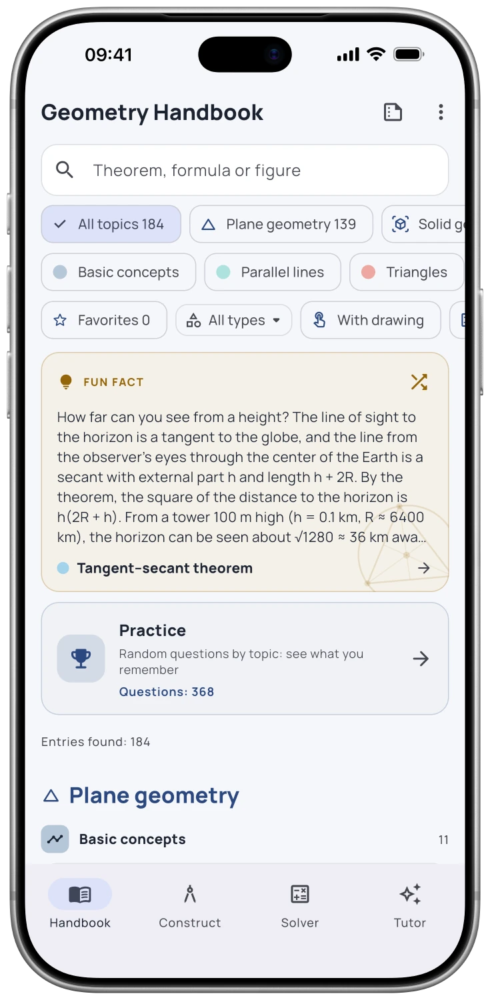

ତୁମେ ଖୋଦି ନିର୍ମାଣ କର।
ବିନ୍ଦୁ ଲଗାନ୍ତୁ, ରେଖା ଏବଂ ବୃତ୍ତ ଆଙ୍କନ୍ତୁ, ପରେ ସମାନ୍ତର ରେଖା, ଦ୍ୱିଖଣ୍ଡକ ରେଖା ଏବଂ ଛେଦନ ନିର୍ମାଣ କରନ୍ତୁ। ଏକ ବିନ୍ଦୁକୁ ଟାଣିଲେ, ନିର୍ମାଣ ସେହି ଅନୁସାରେ ହେବ।
ବୁଝିବାର ଏକ ନୂତନ ଦୃଷ୍ଟିକୋଣ
ଏହାକୁ ଆଙ୍କିବେ, ଏହାକୁ ସଞ୍ଚାଳନ କରନ୍ତୁ, ଏହାକୁ ପାଇବେ।
ଆପଣଙ୍କ ପକେଟରେ ଜ୍ୟାମିତିର କର୍ମଶାଳା। ଚିତ୍ର ନିର୍ମାଣ କରନ୍ତୁ, ଆକୃତି ଅନୁସନ୍ଧାନ କରନ୍ତୁ ଏବଂ ଉପପାଦ୍ୟ କାହିଁକି ସତ୍ୟ ତାହା ବୁଝନ୍ତୁ।
ମାଗଣାରହୀତ ଡାଉନଲୋଡ୍ · ଅପ୍ସନାଲ୍ ପ୍ରୋ ଫିଚର୍


ଆପ୍ ସ୍କ୍ରିନଶଟ
ବୈଶିଷ୍ଟ୍ୟ
ବିନ୍ଦୁ ଲଗାନ୍ତୁ, ରେଖା ଏବଂ ବୃତ୍ତ ଆଙ୍କନ୍ତୁ, ପରେ ସମାନ୍ତର ରେଖା, ଦ୍ୱିଖଣ୍ଡକ ରେଖା ଏବଂ ଛେଦନ ନିର୍ମାଣ କରନ୍ତୁ। ଏକ ବିନ୍ଦୁକୁ ଟାଣିଲେ, ନିର୍ମାଣ ସେହି ଅନୁସାରେ ହେବ।
ସଠିକ୍ ବିବୃତି, ଆଙ୍କନ, ଉଦାହରଣ ଏବଂ ପ୍ରମାଣ ସହିତ ସମତଳ ଏବଂ ଘନ ଜ୍ୟୋମିତି ଅନୁସନ୍ଧାନ କରନ୍ତୁ।
ସ୍କେଲ ସହିତ ଆଙ୍କନ ସହିତ ତ୍ରିଭୁଜ ଏବଂ ଘନ ସମାଧାନ କରନ୍ତୁ। ପ୍ରୋ ଉତ୍ପତ୍ତି, ପ୍ରତିବଦ୍ଳିତ ମୂଲ୍ୟ ଏବଂ ପରିଣାମ ପଛରେ ଥିବା ପଦଗୁଡ଼ିକ ଯୋଡିଥାଏ।
ଆପ୍କୁ ଦେଖନ୍ତୁ
ପ୍ରକୃତ ସ୍କ୍ରିନ୍। ଭିତରେ କ’ଣ ଅଛି, ତାହା ଜାଣିବା ପାଇଁ ଏହା ଅଧିକ ଉପଯୁକ୍ତ।


FAQ
ଆରମ୍ଭ କରିବା ପୂର୍ବରୁ ଉତ୍ତର
ହଁ। ହ୍ୟାଣ୍ଡବୁକ୍ ଏବଂ ଏହାର ସମ୍ବନ୍ଧିତ ବିଷୟବସ୍ତୁ ଇନ୍ଷ୍ଟଲ୍ କରିବା ପରେ ଅଫ୍ଲାଇନ୍ରେ ଉପଲବ୍ଧ। ଆପଲ୍ ଇଣ୍ଟେଲିଜେନ୍ସ ଫିଚର୍ ପାଇଁ ଏକ ସୁସଙ୍ଗତ ଡିଭାଇସ୍ ଏବଂ ଡାଉନଲୋଡ୍ କରାଯାଇଥିବା ସିଷ୍ଟମ ମଡେଲ ଆବଶ୍ୟକ।
ଆପଣ ମାଗଣାରହୀତରେ ଆପ୍ ଡାଉନଲୋଡ୍ କରିପାରିବେ। ପ୍ରୋ ବିନା ହ୍ୟାଣ୍ଡବୁକ୍ ଲାଭଦାୟକ ରହିବ; ଅତିରିକ୍ତ ଶିକ୍ଷା ସାଧନ ଏବଂ ଏଆଇ ଫିଚର୍ ଆପ୍ର ପ୍ରୋ ପ୍ଲ୍ୟାନ୍ର ଉପରେ ନିର୍ଭର କରେ। ଆପ୍ ସ୍ଟୋର ଏବଂ ଆପ୍ ଭିତରେ ଥିବା କ୍ରୟ ସ୍କ୍ରିନ୍ ବର୍ତ୍ତମାନର ବିକଳ୍ପଗୁଡ଼ିକ ଦେଖାଏ।
ନାହିଁ। ଆପଣ ଏହା ବିନା ହ୍ୟାଣ୍ଡବୁକ୍ ପଢ଼ି ଏବଂ ବ୍ୟବହାର କରିପାରିବେ। ଏଆଇ ଟ୍ୟୁଟର ଏକ ଅପ୍ସନାଲ୍, ଏବଂ ଏହା ପାଇଁ ଆପଲ୍ ଇଣ୍ଟେଲିଜେନ୍ସ ସକ୍ରିୟ ହୋଇଥିବା ଏକ ସୁସଙ୍ଗତ ଆଇଫୋନ୍ କିମ୍ବା ଆଇପ୍ୟାଡ୍ ଆବଶ୍ୟକ। ସମର୍ଥିତ ଭାଷାଗୁଡ଼ିକ ଆପଣଙ୍କ ସିଷ୍ଟମ ଉପରେ ନିର୍ଭର କରେ।
ଆପ୍ ଆଇଫୋନ୍ ଏବଂ ଆଇପ୍ୟାଡ୍ ପାଇଁ ଉପଲବ୍ଧ। ବର୍ତ୍ତମାନର ଅପରେଟିଂ ସିଷ୍ଟମ ଏବଂ ଡିଭାଇସ୍ ଆବଶ୍ୟକତା ପାଇଁ ଆପ୍ ସ୍ଟୋର ପୃଷ୍ଠା ଯାଞ୍ଚ କରନ୍ତୁ।
ମାଗଣାରହୀତ ଡାଉନଲୋଡ୍ · ଅପ୍ସନାଲ୍ ପ୍ରୋ ଫିଚର୍
AI ଟ୍ୟୁଟର Proର ଏକ ସୁବିଧା। ଏଥିପାଇଁ ସୁସଙ୍ଗତ iPhone କିମ୍ବା iPad, iOS/iPadOS 26 କିମ୍ବା ପରବର୍ତ୍ତୀ ସଂସ୍କରଣ ଏବଂ ସକ୍ରିୟ Apple Intelligence ଆବଶ୍ୟକ। ଉପଲବ୍ଧତା ଭାଷା ଓ ଅଞ୍ଚଳ ଅନୁସାରେ ବଦଳେ। AI ଉତ୍ତରରେ ଭୁଲ ଥାଇପାରେ।